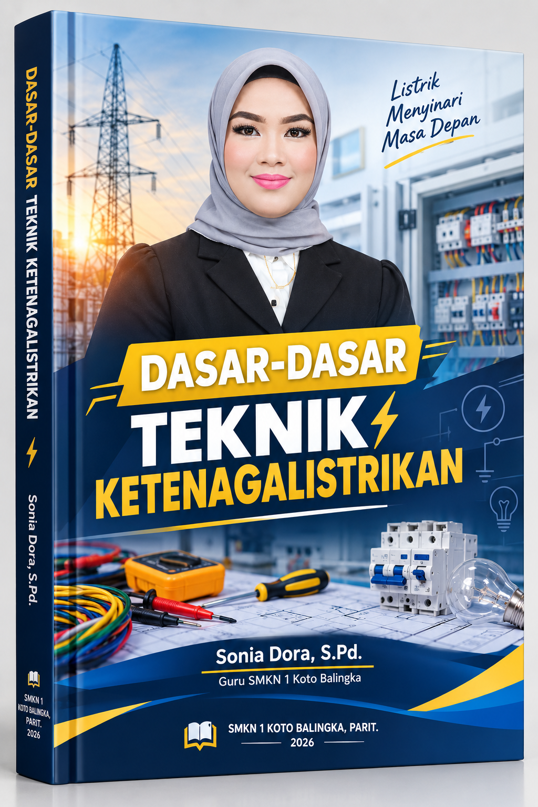

Kelas X Semester 1
Panduan komprehensif yang memadukan wawasan industri, keselamatan kerja (K3LH), teori dasar listrik, dan praktik bengkel sesuai standar kompetensi dunia kerja modern.

6
Bab Komprehensif
16
Pertemuan Terstruktur
K3LH
Berbasis Keselamatan
2026
Tahun Terbit
Materi disusun berdasarkan proses bisnis nyata di industri ketenagalistrikan, mulai dari pembangkitan hingga distribusi, termasuk pengenalan IoT dan SCADA.
Penekanan mendalam pada Keselamatan dan Kesehatan Kerja serta Lingkungan Hidup, termasuk penggunaan APD, prosedur Lockout/Tagout, dan penanganan darurat.
Penjelasan Hukum Ohm, rangkaian DC, hingga praktik penyambungan kabel dan penggunaan multimeter disajikan dengan bahasa yang terstruktur dan mudah dipahami.
6 Bab terstruktur yang mencakup 16 pertemuan. Klik pada judul pertemuan untuk membuka materi (akan terbuka di tab baru).